This is the multi-page printable view of this section. Click here to print.
Basics
- 1: Registration & Account Access
- 2: Create annotation task
- 3: Create multi tasks
- 4: Jobs page
- 5: Tasks page
- 6: Task details
- 7: Interface of the annotation tool
- 8: Basic navigation
- 9: Top Panel
- 10: Controls sidebar
- 11: Objects sidebar
- 12: CVAT Workspace
- 13: 3D task workspace
- 14: Standard 3D mode (basics)
- 15: Settings
- 16: Types of shapes
- 17: Shape mode (basics)
- 18: Track mode (basics)
- 19: 3D Object annotation
- 20: Attribute annotation mode (basics)
- 21: Vocabulary
- 22: Cloud storages page
- 23: Attach cloud storage
1 - Registration & Account Access
To start to annotate in CVAT.ai, you need to create an account or log in to the existing account.
See:
- User registration
- User registration with social accounts
- Account access
- Password reset
- Change password
To create account or log in, go to the CVAT.ai Cloud login page:

Note: By default authentication and registration with Google and GitHub work only for CVAT.ai Cloud.
If you want to use Google and GitHub authentication on a local installation, see Social auth configuration.
User registration
To register, do the following:
-
Click Create an account.

-
Fill in all blank fields, accept terms of use, and click Create an account.
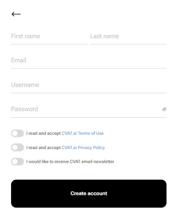
A username generates from the email automatically. You can edit it if needed.

User registration with social accounts
To register with Google or GitHub, click the button with the name of the service, and follow instructions on the screen.
Account access
To access your account, do the following:
- Go to the login page.
- Enter username or email. The password field will appear.
- Enter the password and click Next.
To log in with Google or GitHub, click the button with the name of the service.
Password reset
To reset password, do the following:
-
Go to the CVAT.ai Cloud page and click Forgot password?

-
Enter email you used for registration and click Send.
-
Open email and click on the link from CVAT.
-
Enter new password in both fields and click Change password.

Change password
To change password, do the following:
-
Log in to your CVAT account.
-
In the top right corner, click on the arrow next to your nickname.
-
Select Change password.
-
Follow instructions on the screen.

2 - Create annotation task
To start annotating in CVAT, you need to create an annotation task and specify its parameters.
To create a task, on the Tasks page click + and select Create new task.

See:
Create a task
To create a new task, open task configurator:

And specify the following parameters:
-
In the Name field, enter the name of the new task.

-
(Optional) From the Projects drop-down, select a project for the new task.
Leave this field empty if you do not want to assign the task to any project.
Note: Following steps are valid if the task does not belong to a project.
If the task has been assigned to a project, the project’s labels will be applied to the task. -
On the Constructor tab, click Add label.
The label constructor menu will open:
-
In the Label name field, enter the name of the label.
-
(Optional) To limit the use of the label to a certain shape tool, from the Label shape drop-down select the shape.
-
(Optional) Select the color for the label.

-
(Optional) Click Add an attribute and set up its properties.
-
Click Select files to upload files for annotation.
-
Click Continue to submit the label and start adding a new one
or Cancel to terminate the current label and return you to the labels list. -
Click Submit and open to submit the configuration and open the created task,
or Submit and continue, to submit the configuration and start a new task.
Label shape
Labels (or classes) are categories of objects that you can annotate.
Label shape limits the use of the label to certain shape tool.
Any is the default setting that does not limit the use of the
label to any particular shape tool.
For example, you added:
- Label
sunwith the Label shape typeellipse - Label
carwith the Label shape typeany
As a result:
-
The
sunlabel will be available only for ellipse shape. -
The
carlabel will be available for all shapes.
The tools on the Controls sidebar will be limited to the selected types of shapes.
For example, if you select Any,
all tools will be available,
but if you select Rectangle for all labels,
only the Rectangle tool will be
visible on the sidebar.
Note: You cannot apply the Label shape to the AI and OpenCV tools, these tools will always be available.

You can change the shape of the label as needed. This change will not affect the existing annotation.
For example, if you created objects using polygons and then changed the label shape to polylines, all previously created objects will remain polygons. However, you will not be able to add new polygon objects with the same label.
Note: You cannot change the shape of the
skeletonlabel.
The Label shape field for theskeletonlabel is disabled.
Add an attribute
Attribute is a property of an annotated object, such as color, model, or other quality.
For example, you have a label for face and want to
specify the type of face. Instead of creating additional
labels for male and female, you can use attributes
to add this information.
There are two types of attributes:
- Immutable attributes are unique and do not change from frame to frame.
For example,
age,gender, andcolor. - Mutable attributes are temporary and can change from frame to frame.
For example,
pose,quality, andtruncated.
Added attributes will be available from the Objects menu:

To add an attribute, do the following:
-
Go to the Constructor tab and click Add attribute.
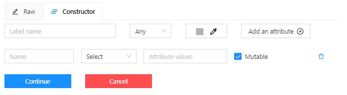
-
In the Name field enter the name of the attribute.
-
From the drop-down, select way to display the attribute in the Objects menu:
-
Selectenables a drop-down list, from which you can select an attribute.
If in the Attribute value field you add__undefined__, the drop-down list will have a blank value.
This is useful for cases where the attribute of the object cannot be clarified: -

-
Radioenables the selection of one option from several options. -
Checkboxenables the selection of multiple options. -
Textsets the attribute to a text field. -
Numbersets the attribute to numerical field in the following format:min;max;step.
-
-
In the Attribute values field, add attribute values.
To separate values use Enter.
To delete value, use Backspace or click x next to the value name. -
(Optional) For mutable attributes, select Mutable.
-
(Optional) To set the default attribute, hover over it with mouse cursor and click on it. The default attribute will change color to blue.

To delete an attribute, click Delete attribute.
Select files
There are several ways to upload files:
| Data source | Description |
|---|---|
| My computer | Use this option to select files from your laptop or PC. To select file: 1. Click on the Select files field: . 2. Select files to upload. |
| Connected file share | Advanced option. Upload files from a local or cloud shared folder. Note, that you need to mount a fileshare first. For more information, see Share path |
| Remote source | Enter a list of URLs (one per line) in the field. |
| Cloud Storage | Advanced option. To upload files from cloud storage, type the cloud storage name, (optional) choose the manifest file, and select the required files. For more information, see Attach cloud storage. Use the search feature to find a file (by file name) from the connected cloud storage. |
Editing labels in RAW format
The Raw is a way of working with labels for an advanced user.
It is useful when you need to copy labels from one independent task to another.
Note: Be careful with changing the raw specification of an existing task/project. Removing any “id” properties will lead to losing existing annotations. This property will be removed automatically from any text you insert to this field.

Raw presents label data in .json format with an option of editing and copying labels as text. The Done button applies the changes and the Reset button cancels the changes.
Data formats for a 3D task
To create a 3D task, you must prepare an archive with one of the following directory structures.
Note: You can’t mix 2D and 3D data in the same task.
VELODYNE FORMAT
Structure:
velodyne_points/
data/
image_01.bin
IMAGE_00 # unknown dirname,
# generally image_01.png can be under IMAGE_00, IMAGE_01, IMAGE_02, IMAGE_03, etc
data/
image_01.png 3D POINTCLOUD DATA FORMAT
Structure:
pointcloud/
00001.pcd
related_images/
00001_pcd/
image_01.png # or any other image 3D, DEFAULT DATAFORMAT Option 1
Structure:
data/
image.pcd
image.png 3D, DEFAULT DATAFORMAT Option 2
Structure:
data/
image_1/
image_1.pcd
context_1.png # or any other name
context_2.jpgAdvanced configuration
Use advanced configuration to set additional parameters for the task and customize it to meet specific needs or requirements.

The following parameters are available:
| Element | Description |
|---|---|
| Sorting method | Note: Does not work for the video data. Several methods to sort the data. For example, the sequence 2.jpeg, 10.jpeg, 1.jpeg after sorting will be: 1.jpeg, 10.jpeg, 2.jpeg 1.jpeg, 2.jpeg, 10.jpeg 2.jpeg, 10.jpeg, 1.jpeg |
| Use zip/video chunks | Use this parameter to divide your video or image dataset for annotation into short video clips a zip file of frames. Zip files are larger but do not require decoding on the client side, and video clips are smaller but require decoding. It is recommended to turn off this parameter for video tasks to reduce traffic between the client side and the server. |
| Use cache | Select checkbox, to enable on-the-fly data processing to reduce task creation time and store data in a cache with a policy of evicting less popular items. For more information, see Data preparation on the fly. |
| Image Quality | CVAT has two types of data: original quality and compressed. Original quality images are used for dataset export and automatic annotation. Compressed images are used only for annotations to reduce traffic between the server and client side. It is recommended to adjust the compression level only if the images contain small objects that are not visible in the original quality. Values range from 5 (highly compressed images) to 100 (not compressed |
| Overlap Size | Use this parameter to create overlapped segments, making tracking continuous from one segment to another. Note that this functionality only works for bounding boxes. This parameter has the following options: Interpolation task (video sequence). If you annotate with a bounding box on two adjacent segments, they will be merged into a single bounding box. In case the overlap is zero or the bounding box is inaccurate (not enclosing the object properly, misaligned or distorted) on the adjacent segments, it may be difficult to accurately interpole the object’s movement between the segments. As a result, multiple tracks will be created for the same object. Annotation task (independent images). If an object exists on overlapped segments with overlap greater than zero, and the annotation of these segments is done properly, then the segments will be automatically merged into a single object. If the overlap is zero or the annotation is inaccurate (not enclosing the object properly, misaligned, distorted) on the adjacent segments, it may be difficult to accurately track the object. As a result, multiple bounding boxes will be created for the same object. If the annotations on different segments (on overlapped frames) are very different, you will have two shapes for the same object. To avoid this, accurately annotate the object on the first segment and the same object on the second segment to create a track between two annotations. |
| Segment size | Use this parameter to divide a dataset into smaller parts. For example, if you want to share a dataset among multiple annotators, you can split it into smaller sections and assign each section to a separate job. This allows annotators to work on the same dataset concurrently. |
| Start frame | Defines the first frame of the video. |
| Stop frame | Defines the last frame of the video. |
| Frame Step | Use this parameter to filter video frames or images in a dataset. Specify frame step value to include only certain frames or images in the dataset. For example, if the frame step value is 25, the dataset will include every 25th frame or image. If a video has 100 frames, setting the frame step to 25 will include only frames 1, 26, 51, 76, and 100 in the dataset. This can be useful for reducing the size of the dataset, or for focusing on specific frames or images that are of particular interest. |
| Chunk size | Defines amount of frames to be packed in a chunk when send from client to server. The server defines automatically if the chunk is empty. Recommended values: |
| Issue tracker | Use this parameter to specify the issue tracker URL. |
| Source storage | Specify the source storage for importing resources like annotations and backups. If the task was assigned to the project, use the Use project source storage toggle to determine whether to use project values or specify new ones. |
| Target storage | Specify the target storage (local or cloud) for exporting resources like annotations and backups. If the task is created in the project, use the Use project target storage toggle to determine whether to use project values or specify new ones. |
To save and open the task, click Submit & Open .
To create several tasks in sequence, click Submit & Continue.
Created tasks will be displayed on the tasks page.
3 - Create multi tasks
Use Create multi tasks to create multiple video annotation tasks with the same configuration.
The Сreate multi tasks feature is available for videos only.
To create the multi tasks, on the Tasks page click + and select Create multi tasks.

See:
Create multi tasks
To add several tasks in one go, open the task configurator:

And specify the following parameters:
-
In the Name field, enter the name of the new task:
- Enter the name of the task. If the name includes more than one word, use the underscore:
Word1 word2 word3 - (Optional)
{{index}}adds an index to the file in the set (starting from 0). - (Optional)
{{file_name}}adds the file’s name to the task’s name.Note: use hyphen between three parameters:
Word1 word2 word3 {{index}} {{file_name}}
- Enter the name of the task. If the name includes more than one word, use the underscore:
-
(Optional) From the Projects drop-down, select a project for the tasks.
Leave this field empty if you do not want to assign tasks to any project.Note: Following steps are valid if the tasks do not belong to a project.
If the tasks have been assigned to a project, the project’s labels will be applied to the tasks. -
On the Constructor tab, click Add label.
-
In the Label name field, enter the name of the label.
-
(Optional) Select the color for the label.
-
(Optional) Click Add an attribute and set up its properties.
-
Click Select files to upload files for annotation.
Note: You cannot upload multiple tasks from the cloud storage.
-
Click Submit
Ntasks
Example
A step-by-step example for creating the multiple tasks:
-
In the Name field, enter the
Create_multitask-{{index}}-{{file_name}}. -
Add labels.
-
Select files.
In case there are more than four files, only the total number of selected files will be displayed:
-
Click Submit
Ntasks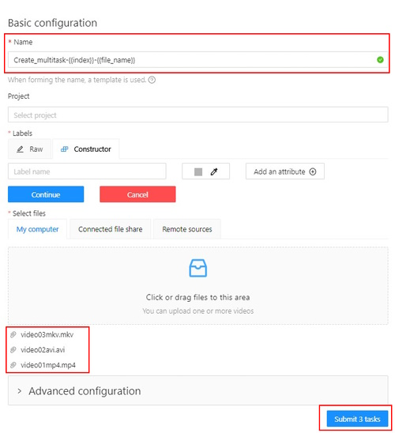
-
You will see a progress bar that shows the progress of the tasks being created:

-
Click Ok.
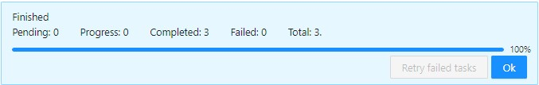
The result will look like the following:

Errors
During the process of adding multiple tasks, the following errors may occur:
| Error | Description |
|---|---|
 |
Wrong file format. You can add only video files. |
 |
In the process of creating a task, CVAT was not able to process the video file. The name of the failed file will be displayed on the progress bar. To fix this issue: |
Advanced configuration
Use advanced configuration to set additional parameters for the task and customize it to meet specific needs or requirements.
For more information, see Advanced configuration
4 - Jobs page
On the jobs page, users (for example, with the worker role) can see the jobs that are assigned to them without having access to the task page, as well as track progress, sort and apply filters to the job list.
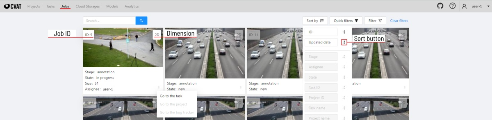
On the job page there is a list of jobs presented in the form of tiles, where each tile is one job. Each element contains:
- job ID
- dimension
2Dor3D - preview
- stage and state
- when hovering over an element, you can see:
- size
- assignee
- menu to navigate to a task, project, or bug tracker.
To open the job in a new tab, click on the job by holding
Ctrl.
In the upper left corner there is a search bar, using which you can find the job by assignee, stage, state, etc. In the upper right corner there are sorting, quick filters and filter.
Filter
Applying filter disables the quick filter.
The filter works similarly to the filters for annotation, you can create rules from properties, operators and values and group rules into groups. For more details, see the filter section. Learn more about date and time selection.
For clear all filters press Clear filters.
Supported properties for jobs list
| Properties | Supported values | Description |
|---|---|---|
State |
all the state names | The state of the job (can be changed in the menu inside the job) |
Stage |
all the stage names | The stage of the job (is specified by a drop-down list on the task page) |
Dimension |
2D or 3D |
Depends on the data format (read more in creating an annotation task) |
Assignee |
username | Assignee is the user who is working on the job. (is specified on task page) |
Last updated |
last modified date and time (or value range) | The date can be entered in the dd.MM.yyyy HH:mm format or by selecting the date in the window that appears when you click on the input field |
ID |
number or range of job ID | |
Task ID |
number or range of task ID | |
Project ID |
number or range of project ID | |
Task name |
task name | Set when creating a task, can be changed on the (task page) |
Project name |
project name | Specified when creating a project, can be changed on the (project section) |
5 - Tasks page

The tasks page contains elements and each of them relates to a separate task. They are sorted in creation order.
Each element contains: task name, preview, progress bar, button Open, and menu Actions.
Each button is responsible for a in menu Actions specific function:
Export task dataset— download annotations or annotations and images in a specific format. More information is available in the export/import datasets section.Upload annotationupload annotations in a specific format. More information is available in the export/import datasets section.Automatic Annotation— automatic annotation with OpenVINO toolkit. Presence depends on how you build the CVAT instance.Backup task— make a backup of this task into a zip archive. Read more in the backup section.Move to project— Moving a task to a project (you can move only a task which does not belong to any project). In case of label mismatch, you can create or delete necessary labels in the project/task. Some task labels can be matched with the target project labels.Delete— delete task.
In the upper left corner there is a search bar, using which you can find the task by assignee, task name etc. In the upper right corner there are sorting, quick filters and filter.
Filter
Applying filter disables the quick filter.
The filter works similarly to the filters for annotation, you can create rules from properties, operators and values and group rules into groups. For more details, see the filter section. Learn more about date and time selection.
For clear all filters press Clear filters.
Supported properties for tasks list
| Properties | Supported values | Description |
|---|---|---|
Dimension |
2D or 3D |
Depends on the data format (read more in creating an annotation task) |
Status |
annotation, validation or completed |
|
Data |
video, images |
Depends on the data format (read more in creating an annotation task) |
Subset |
test, train, validation or custom subset |
[read more] [subset] |
Assignee |
username | Assignee is the user who is working on the project, task or job. (is specified on task page) |
Owner |
username | The user who owns the project, task, or job |
Last updated |
last modified date and time (or value range) | The date can be entered in the dd.MM.yyyy HH:mm format or by selecting the date in the window that appears when you click on the input field |
ID |
number or range of job ID | |
Project ID |
number or range of project ID | |
Name |
name | On the tasks page - name of the task, on the project page - name of the project |
Project name |
project name | Specified when creating a project, can be changed on the (project section) |
Push Open button to go to task details.
6 - Task details
Task details is a task page which contains a preview, a progress bar and the details of the task (specified when the task was created) and the jobs section.

-
The next actions are available on this page:
- Change the task’s title.
- Open
Actionsmenu. - Change issue tracker or open issue tracker if it is specified.
- Change labels (available only if the task is not related to the project).
You can add new labels or add attributes for the existing labels in the Raw mode or the Constructor mode.
By clicking
Copyyou will copy the labels to the clipboard. - Assigned to — is used to assign a task to a person. Start typing an assignee’s name and/or choose the right person out of the dropdown list. In the list of users, you will only see the users of the organization where the task is created.
-
Jobs — is a list of all jobs for a particular task. Here you can find the next data:
- Jobs name with a hyperlink to it.
- Frames — the frame interval.
- A stage of the job. The stage is specified by a drop-down list.
There are three stages:
annotation,validationoracceptance. This value affects the task progress bar. - A state of the job. The state can be changed by an assigned user in the menu inside the job.
There are several possible states:
new,in progress,rejected,completed. - Started on — start date of this job.
- Duration — is the amount of time the job is being worked.
- Assignee is the user who is working on the job. You can start typing an assignee’s name and/or choose the right person out of the dropdown list.
- Reviewer – a user assigned to carry out the review, read more in the review section.
Copy. By clickingCopyyou will copy the job list to the clipboard. The job list contains direct links to jobs.
You can filter or sort jobs by status, as well as by assigner or reviewer.
Follow a link inside Jobs section to start annotation process.
In some cases, you can have several links. It depends on size of your
task and Overlap Size and Segment Size parameters. To improve
UX, only the first chunk of several frames will be loaded and you will be able
to annotate first images. Other frames will be loaded in background.
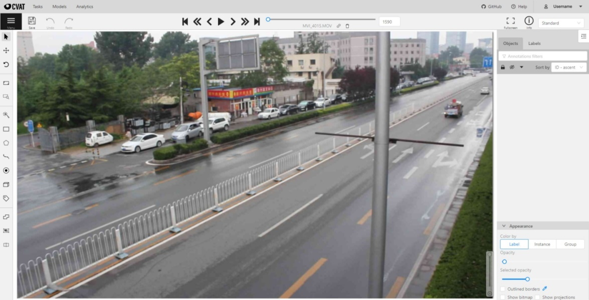
7 - Interface of the annotation tool
Main user interface
The tool consists of:
-
Header- pinned header used to navigate CVAT sections and account settings; -
Top panel— contains navigation buttons, main functions and menu access; -
Workspace— space where images are shown; -
Controls sidebar— contains tools for navigating the image, zoom, creating shapes and editing tracks (merge, split, group); -
Objects sidebar— contains label filter, two lists: objects (on the frame) and labels (of objects on the frame) and appearance settings.

Pop-up messages

In CVAT, you’ll receive pop-up messages in the upper-right corner, on any page. Pop-up messages can contain useful information, links, or error messages.
Information message
Informational messages inform about the end of the auto-annotation process. Learn more about auto-annotation.
Jump Suggestion Messages
Open a task
After creating a task, you can immediately open it by clicking Open task.
Learn more about creating a task.
Continue to the frame on which the work on the job is finished
When you open a job that you previously worked on, you will receive pop-up messages with a proposal to go to the frame that was visited before closing the tab.
Error Messages
If you perform impossible actions, you may receive an error message.
The message may contain information about the error
or a prompt to open the browser console (shortcut F12) for information.
If you encounter a bug that you can’t solve yourself,
you can create an issue on GitHub.
8 - Basic navigation
-
Use arrows below to move to the next/previous frame. Use the scroll bar slider to scroll through frames. Almost every button has a shortcut. To get a hint about a shortcut, just move your mouse pointer over an UI element.

-
To navigate the image, use the button on the controls sidebar. Another way an image can be moved/shifted is by holding the left mouse button inside an area without annotated objects. If the
Mouse Wheelis pressed, then all annotated objects are ignored. Otherwise the a highlighted bounding box will be moved instead of the image itself.
-
You can use the button on the sidebar controls to zoom on a region of interest. Use the button
Fit the imageto fit the image in the workspace. You can also use the mouse wheel to scale the image (the image will be zoomed relatively to your current cursor position).
9 - Top Panel

Menu button
It is the main menu of the annotation tool. It can be used to download, upload and remove annotations.

Button assignment:
-
Upload Annotations — uploads annotations into a task.
-
Export as a dataset — download a data set from a task in one of the supported formats. You can also enter a Custom name and enable the Save images checkbox if you want the dataset to contain images.
-
Remove Annotations — calls the confirmation window if you click Delete, the annotation of the current job will be removed, if you click Select range you can remove annotation on range frames, if you activate checkbox Delete only keyframe for tracks then only keyframes will be deleted from the tracks, on the selected range.

-
Open the task — opens a page with details about the task.
-
Change job state - changes the state of the job (
new,in progress,rejected,completed). -
Finish the job/Renew the job - changes the job stage and state to
acceptanceandcompleted/annotationandnewcorrespondingly.
Save Work
Saves annotations for the current job. The button has an indication of the saving process.

Undo-redo buttons
Use buttons to undo actions or redo them.

Done

Used to complete the creation of the object. This button appears only when the object is being created.
Block

Used to pause automatic line creation when drawing a polygon with OpenCV Intelligent scissors. Also used to postpone server requests when creating an object using AI Tools. When blocking is activated, the button turns blue.
Player
Go to the first /the latest frames.

Go to the next/previous frame with a predefined step. Shortcuts:
V — step backward, C — step forward. By default the step is 10 frames
(change at Account Menu —> Settings —> Player Step).

The button to go to the next / previous frame has the customization possibility. To customize, right-click on the button and select one of three options:
- The default option - go to the next / previous frame (the step is 1 frame).
- Go to the next / previous frame that has any objects (in particular filtered). Read the filter section to know the details how to use it.
- Go to the next / previous frame without annotation at all. Use this option in cases when you need to find missed frames quickly.
Shortcuts: D - previous, F - next.

Play the sequence of frames or the set of images. Shortcut: Space (change at Account Menu —> Settings —> Player Speed).

Go to a specific frame. Press ~ to focus on the element.

To delete frame.
Shortcut: Alt+Del
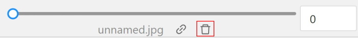
Fullscreen Player
The fullscreen player mode. The keyboard shortcut is F11.

Info
Open the job info.
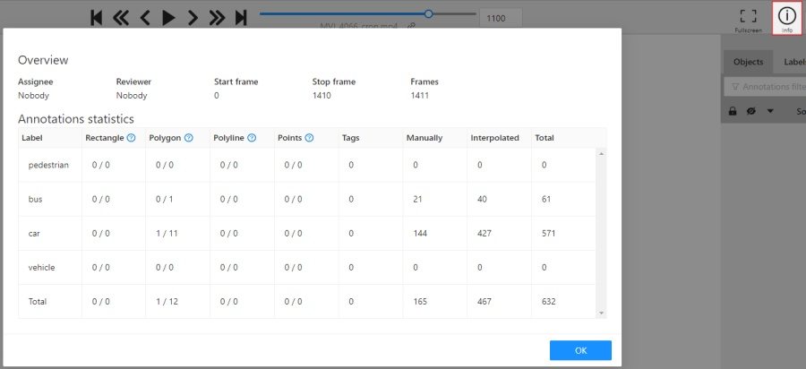
Overview:
Assignee- the one to whom the job is assigned.Reviewer– a user assigned to carry out the review, read more in the review section.Start Frame- the number of the first frame in this job.End Frame- the number of the last frame in this job.Frames- the total number of all frames in the job.
Annotations statistics:
This is a table number of created shapes, sorted by labels (e.g. vehicle, person) and type of annotation (shape, track). As well as the number of manual and interpolated frames.
UI switcher
Switching between user interface modes.

10 - Controls sidebar
Navigation
Navigation block - contains tools for moving and rotating images.
| Icon | Description |
|---|---|
 |
Cursor (Esc)- a basic annotation pedacting tool. |
 |
Move the image- a tool for moving around the image withoutthe possibility of editing. |
 |
Rotate- two buttons to rotate the current framea clockwise ( Ctrl+R) and anticlockwise (Ctrl+Shift+R).You can enable Rotate all images in the settings to rotate all the images in the job |
Zoom
Zoom block - contains tools for image zoom.
| Icon | Description |
|---|---|
 |
Fit image- fits image into the workspace size.Shortcut - double click on an image |
 |
Select a region of interest- zooms in on a selected region.You can use this tool to quickly zoom in on a specific part of the frame. |
Shapes
Shapes block - contains all the tools for creating shapes.
| Icon | Description | Links to section |
|---|---|---|
| 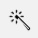 | AI Tools |
AI Tools |
OpenCV |
OpenCV | |
 |
Rectangle |
Shape mode; Track mode; Drawing by 4 points |
 |
Polygon |
Annotation with polygons; Track mode with polygons |
 |
Polyline |
Annotation with polylines |
 |
Points |
Annotation with points |
 |
Ellipses |
Annotation with ellipses |
 |
Cuboid |
Annotation with cuboids |
| 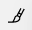 | Brushing tools |
Annotation with brushing |
Tag |
Annotation with tags | |
 |
Open an issue |
Review (available only in review mode) |
Edit
Edit block - contains tools for editing tracks and shapes.
| Icon | Description | Links to section |
|---|---|---|
 |
Merge Shapes(M) - starts/stops the merging shapes mode. |
Track mode (basics) |
Group Shapes (G) - starts/stops the grouping shapes mode. |
Shape grouping | |
 |
Split - splits a track. |
Track mode (advanced) |
|
Split - splits a track. |
Track mode (advanced) |
| Joins multiple labels into one | Joining mask tool | |
| Slices one label into several. | Slice mask/polygon |
11 - Objects sidebar
In the objects sidebar, you can see the list of available objects on the current frame. The following figure is an example of how the list might look like:
| Shape mode | Track mode |
|---|---|
 |
 |
Objects properties
Filter input box

The way how to use filters is described in the advanced guide here.
List of objects

- Switch lock property for all - switches lock property of all objects in the frame.
- Switch hidden property for all - switches hide the property of all objects in the frame.
- Expand/collapse all - collapses/expands the details field of all objects in the frame.
- Sorting - sort the list of objects: updated time, ID - accent, ID - descent
Objects on the sidebar
The type of shape can be changed by selecting the Label property. For instance, it can look like shown in the figure below:

Object action menu
The action menu calls up the button:

The action menu contains:
-
Create object URL - puts a link to an object on the clipboard. After you open the link, this object will be filtered.
-
Make a copy - copies an object. The keyboard shortcut is Ctrl + C > Ctrl + V.
-
Propagate function copies the form to multiple frames and displays a dialog box where you can specify the number of copies or the frame to which you want to copy the object. The keyboard shortcut is Ctrl + B.
There are two options available:- Propagate forward () creates a
copy of the object on
Nsubsequent frames at the same position. - Propagate backward (
 ) creates
a copy of the object on
) creates
a copy of the object on Nprevious frames at the same position.

- Propagate forward () creates a
copy of the object on
-
To background - moves the object to the background. The keyboard shortcut - or _
-
To foreground - moves the object to the foreground. The keyboard shortcut + or =
-
Change instance color- choosing a color using the color picker (available only in instance mode).

-
Remove - removes the object. The keyboard shortcut Del, Shift+Del.
A shape can be locked to prevent its modification or moving by an accident. Shortcut to lock an object: L.

A shape can be Occluded. Shortcut: Q. Such shapes have dashed boundaries.
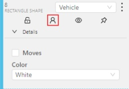
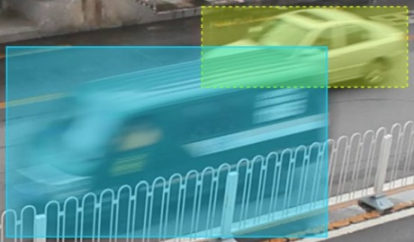
You can change the way an object is displayed on a frame (show or hide).

Switch pinned property - when enabled, a shape cannot be moved by dragging or dropping.

**Tracker switcher **- enable/disable tracking for the object.

By clicking on the Details button you can collapse or expand the field with all the attributes of the object.

Labels
In this tab, you can lock or hide objects of a certain label. To change the color for a specific label, you need to go to the task page and select the color by clicking the edit button, this way you will change the label color for all jobs in the task.

Fast label change
You can change the label of an object using hotkeys. In order to do it, you need to assign a number (from 0 to 9) to labels. By default numbers 1,2…0 are assigned to the first ten labels. To assign a number, click on the button placed at the right of a label name on the sidebar.

After that, you will be able to assign a corresponding label to an object by hovering your mouse cursor over it and pressing Ctrl + Num(0..9).
In case you do not point the cursor to the object, pressing Ctrl + Num(0..9) will set a chosen label as default,
so that the next object you create (use the N key) will automatically have this label assigned.

Appearance
Color By options
Change the color scheme of the annotation:
-
Instance— every shape has a random color
-
Group— every group of shape has its own random color, ungrouped shapes are white
-
Label— every label (e.g. car, person) has its own random color
You can change any random color pointing to a needed box on a frame or on an object sidebar.
Fill Opacity slider
Change the opacity of every shape in the annotation.
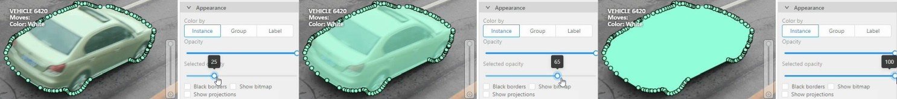
Selected Fill Opacity slider
Change the opacity of the selected object’s fill. It is possible to change the opacity while drawing an object in the case of rectangles, polygons, and cuboids.

Outlines borders checkbox
You can change a special shape border color by clicking on the Eyedropper icon.
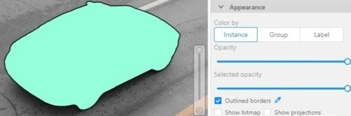
Show bitmap checkbox
If enabled all shapes are displayed in white and the background is black.

Show projections checkbox
Enables/disables the display of auxiliary perspective lines. Only relevant for cuboids

Hide objects sidebar
Hide - the button hides the object’s sidebar.

12 - CVAT Workspace
In CVAT the workspace serves as the central hub where annotators interact with images, videos, and the various tools available to create high-quality annotations.
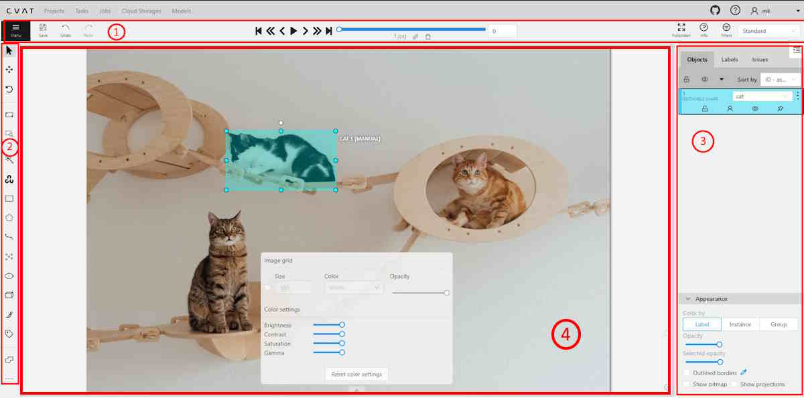
The workspace includes the following elements:
| Element | Description |
|---|---|
| 1 | Top Panel and basic navigation. |
| 2 | Controls sidebar |
| 3 | Objects sidebar |
| 4 | Image annotation area, described in this article. |
See:
Image settings in CVAT
The Image settings panel serves as a versatile tool for fine-tuning the visual aspects of your image. Whether you need to brighten the image, increase contrast, or make other adjustments, this panel is your go-to.
Additionally, the panel allows you to overlay a grid on the image for more precise annotation.
Note: Adjusting the image settings only alters how the pictures are displayed. The images themselves will remain unmodified and unchanged.
By default, the Image settings panel is not visible. To access
it, click on the Arrow Up ( )
icon located at the bottom of the workspace.
)
icon located at the bottom of the workspace.

Adding grid overlay to image in CVAT
To add the grid to the image, do the following:
- Open the Image Settings panel.
- Locate and check the box that allows you to overlay a grid on the image.
- Specify the grid cell size in square millimeters by entering the desired number in the Size field.
- From the Color drop-down list, select the color of the grid.
- Use the Opacity slider to change the transparency of the grid overlay.
Changing color settings of image in CVAT
To change the color setting of the image is CVAT, do the following:
- Open the Image Settings panel.
- Use the slider to change the color quality.
There are four color quality settings in CVAT:
Brightness increases and decreases the overall lightness of the image:
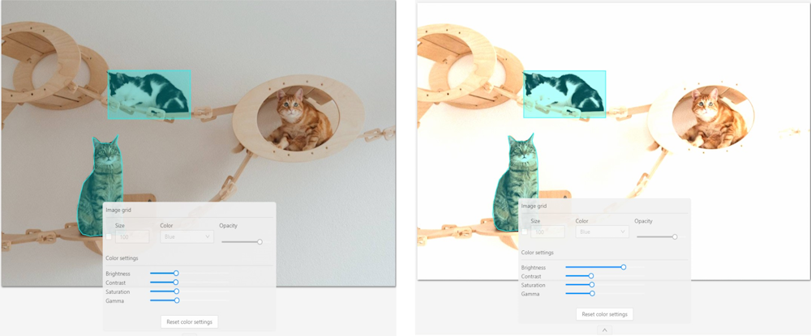
Contrast is the range of brightness, from lightest to darkest, in an image.

Saturation describes the intensity of the color.

Gamma correction can be used to control the overall brightness of an image

To reset the setting to default values, click Reset color settings
Adding layers and Z-axis slider
Z-axis Slider enables you to add annotation layers while hiding the layers positioned beyond.
You can also move between layers by moving the slider to the layer you need.
The slider becomes active when multiple Z-layers are present within a frame. Click + on the slider to add a new layer; upon pressing it, a new layer is automatically created and activated.
You can also relocate objects between layers using the + and - keys.

Interacting with Objects
The workspace is also equipped with the following features:
-
Right-clicking an object opens the Object Card. This interface contains essential controls for modifying the object’s label and attributes, as well as providing access to an action menu.

-
Right-clicking on a polygon point will open a menu, from which you can Delete point or Set start point.

13 - 3D task workspace

If the related_images folder contains any images, a context image will be available in the perspective window.
The contextual image could be compared to 3D data and would help to identify the labels of marked objects.
Perspective – a main window for work with objects in a 3D task.
Projections - projections are tied to an object so that a cuboid is in the center and looks like a rectangle. Projections show only the selected object.
Top– a projection of the view from above.Side– a projection of the left side of the object.Front- a frontal projection of the object.
14 - Standard 3D mode (basics)
Standard 3d mode - Designed to work with 3D data.
The mode is automatically available if you add PCD or Kitty BIN format data when you create a task.
read more
You can adjust the size of the projections, to do so, simply drag the boundary between the projections.
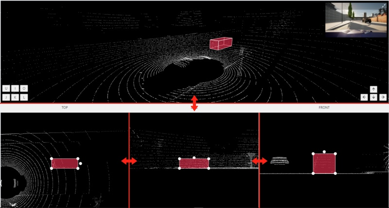
15 - Settings
To open the settings open the user menu in the header and select the settings item or press F2.

Settings have two tabs:
In tab Player you can:
- Control step of
CandVshortcuts. - Control speed of
Space/Playbutton. - Select canvas background color. You can choose a background color or enter manually (in RGB or HEX format).
Reset zoomShow every image in full size or zoomed out like previous (it is enabled by default for interpolation mode and disabled for annotation mode).Rotate all imagescheckbox — switch the rotation of all frames or an individual frame.Smooth imagecheckbox — smooth image when zoom-in it.smoothed pixelized 
In tab Workspace you can:

-
Enable auto savecheckbox — turned off by default. -
Auto save interval (min)input box — 15 minutes by default. -
Show all interpolation trackscheckbox — shows hidden objects on the side panel for every interpolated object (turned off by default). -
Always show object details- show text for an object on the canvas not only when the object is activated:
-
Content of a text- setup of the composition of the object details:ID- object identifier.Attributes- attributes of the object.Label- object label.Source- source of creating of objectsMANUAL,AUTOorSEMI-AUTO.Descriptions- description of attributes.
-
Position of a text- text positioning mode selection:Auto- the object details will be automatically placed where free space is.Center- the object details will be embedded to a corresponding object if possible.
-
Font size of a text- specifies the text size of the object details. -
Automatic bordering- enable automatic bordering for polygons and polylines during drawing/editing. For more information To find out more, go to the section annotation with polygons. -
Intelligent polygon cropping- activates intelligent cropping when editing the polygon (read more in the section edit polygon -
Show tags on frame- shows/hides frame tags on current frame -
Attribute annotation mode (AAM) zoom margininput box — defines margins (in px) for shape in the attribute annotation mode. -
Control points size— defines a size of any interactable points in the tool (polygon’s vertices, rectangle dragging points, etc.) -
Default number of points in polygon approximationWith this setting, you can choose the default number of points in polygon. Works for serverless interactors and OpenCV scissors. -
Click
Saveto save settings (settings will be saved on the server and will not change after the page is refreshed). ClickCancelor pressF2to return to the annotation.
16 - Types of shapes
There are several shapes with which you can annotate your images:
RectangleorBounding boxPolygonPolylinePointsEllipseCuboidCuboid in 3d taskSkeletonTag
And there is how they all look like:


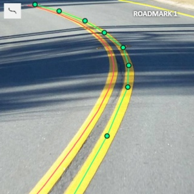 


 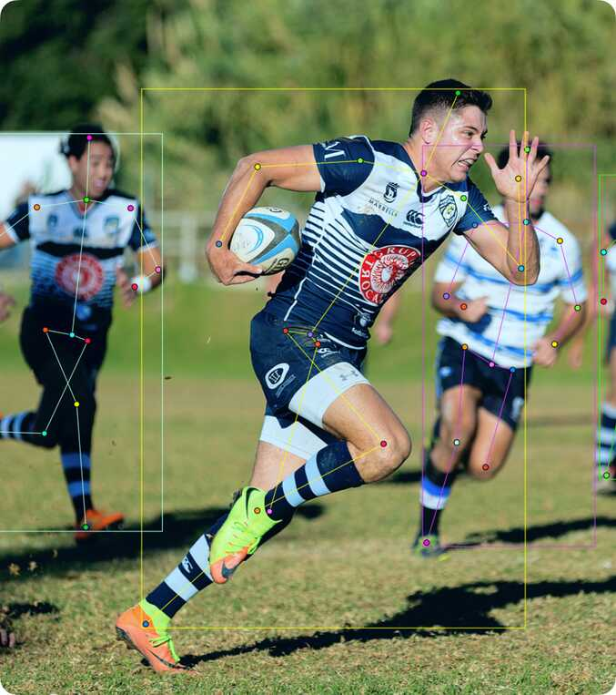
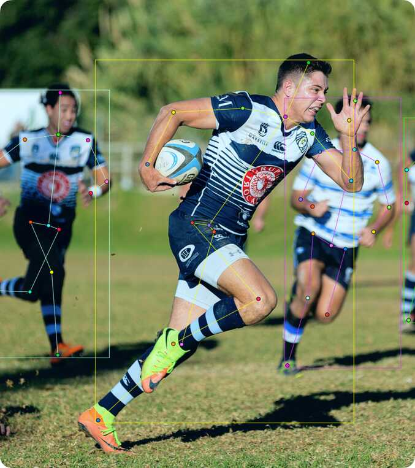

Tag - has no shape in the workspace, but is displayed in objects sidebar.
17 - Shape mode (basics)
Usage examples:
- Create new annotations for a set of images.
- Add/modify/delete objects for existing annotations.
-
You need to select
Rectangleon the controls sidebar:
Before you start, select the correct
Label(should be specified by you when creating the task) andDrawing Method(by 2 points or by 4 points):
-
Creating a new annotation in
Shape mode:-
Create a separate
Rectangleby clicking onShape.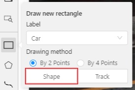
-
Choose the opposite points. Your first rectangle is ready!

-
To learn more about creating a rectangle read here.
-
It is possible to adjust boundaries and location of the rectangle using a mouse. Rectangle’s size is shown in the top right corner , you can check it by clicking on any point of the shape. You can also undo your actions using
Ctrl+Zand redo them withShift+Ctrl+ZorCtrl+Y.
-
-
You can see the
Object cardin the objects sidebar or open it by right-clicking on the object. You can change the attributes in the details section. You can perform basic operations or delete an object by clicking on the action menu button.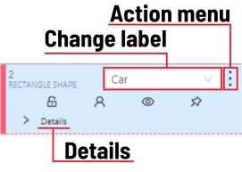
-
The following figure is an example of a fully annotated frame with separate shapes.

Read more in the section shape mode (advanced).
18 - Track mode (basics)
Usage examples:
- Create new annotations for a sequence of frames.
- Add/modify/delete objects for existing annotations.
- Edit tracks, merge several rectangles into one track.
-
Like in the
Shape mode, you need to select aRectangleon the sidebar, in the appearing form, select the desiredLabeland theDrawing method.
-
Creating a track for an object (look at the selected car as an example):
-
Create a
RectangleinTrack modeby clicking onTrack.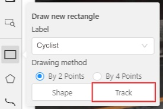
-
In
Track modethe rectangle will be automatically interpolated on the next frames. -
The cyclist starts moving on frame #2270. Let’s mark the frame as a key frame. You can press
Kfor that or click thestarbutton (see the screenshot below).
-
If the object starts to change its position, you need to modify the rectangle where it happens. It isn’t necessary to change the rectangle on each frame, simply update several keyframes and the frames between them will be interpolated automatically.
-
Let’s jump 30 frames forward and adjust the boundaries of the object. See an example below:
-
After that the rectangle of the object will be changed automatically on frames 2270 to 2300:

-
-
When the annotated object disappears or becomes too small, you need to finish the track. You have to choose
Outside Property, shortcutO.
-
If the object isn’t visible on a couple of frames and then appears again, you can use the
Mergefeature to merge several individual tracks into one.
-
Create tracks for moments when the cyclist is visible:

-
Click
Mergebutton or press keyMand click on any rectangle of the first track and on any rectangle of the second track and so on:
-
Click
Mergebutton or pressMto apply changes. -
The final annotated sequence of frames in
Interpolationmode can look like the clip below:
Read more in the section track mode (advanced).
-
19 - 3D Object annotation
Use the 3D Annotation tool for labeling 3D objects and scenes, such as vehicles, buildings, landscapes, and others.
See:
Navigation
The 3D annotation canvas looks like the following

Note: if you added contextual images to the dataset, the canvas will include them. For more information, see Contextual images
For information on the available tools, see Controls sidebar.
You can navigate, using the mouse, or navigation keys:
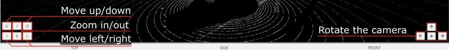
You can also use keyboard shortcuts to navigate:
| Action | Keys |
|---|---|
| Camera rotation | Shift + Arrow (Up, Down, Left, Right) |
| Left/Right | Alt+J/ Alt+L |
| Up/down | Alt+U/ Alt+O |
| Zoom in/ou | Alt+K/ Alt+I |
Annotation with cuboids
There are two options available for 3D annotation:
- Shape: for tasks like object detection.
- Track: uses interpolation to predict the position of objects in subsequent frames. A unique ID will be assigned to each object and maintained throughout the sequence of images.
Annotation with shapes
To add a 3D shape, do the following:
- On the objects pane, select Draw new cuboid > select the label from the drop-down list > Shape.

- The cursor will be followed by a cuboid. Place the cuboid on the 3D scene.

- Use projections to adjust the cuboid. Click and hold the left mouse button to edit the label shape on the projection.

- (Optional) Move one of the four points to change the size of the cuboid.

-
(Optional) To rotate the cuboid, click on the middle point and then drag the cuboid up/down or to left/right.

Tracking with cuboids
To track with cuboids, do the following:
-
On the objects pane, select Draw new cuboid > select the label from the drop-down list > Track.
-
The cursor will be followed by a cuboid. Place the cuboid on the 3D scene.
-
Use projections to adjust the cuboid. Click and hold the left mouse button to edit the label shape on the projection.
- (Optional) Move one of the four points to change the size of the cuboid.
- (Optional) To rotate the cuboid, click on the middle point and then drag the cuboid up/down or to left/right.
-
Move several frames forward. You will see the cuboid you’ve added in frame 1. Adjust it, if needed.
-
Repeat to the last frame with the presence of the object you are tracking.
For more information about tracking, see Track mode
20 - Attribute annotation mode (basics)
-
In this mode you can edit attributes with fast navigation between objects and frames using a keyboard. Open the drop-down list in the top panel and select Attribute annotation Mode.

-
In this mode objects panel change to a special panel :

-
The active attribute will be red. In this case it is
gender. Look at the bottom side panel to see all possible shortcuts for changing the attribute. Press key2on your keyboard to assign a value (female) for the attribute or select from the drop-down list.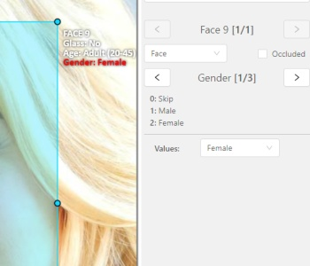
-
Press
Up Arrow/Down Arrowon your keyboard or click the buttons in the UI to go to the next/previous attribute. In this case, after pressingDown Arrowyou will be able to edit theAgeattribute.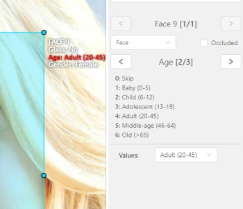
-
Use
Right Arrow/Left Arrowkeys to move to the previous/next image with annotation.
To see all the hot keys available in the attribute annotation mode, press F2.
Read more in the section attribute annotation mode (advanced).
21 - Vocabulary
Label
Label is a type of an annotated object (e.g. person, car, vehicle, etc.)

Attribute
Attribute is a property of an annotated object (e.g. color, model, quality, etc.). There are two types of attributes:
Unique
Unique immutable and can’t be changed from frame to frame (e.g. age, gender, color, etc.)

Temporary
Temporary mutable and can be changed on any frame (e.g. quality, pose, truncated, etc.)

Track
Track is a set of shapes on different frames which corresponds to one object.
Tracks are created in Track mode
Annotation
Annotation is a set of shapes and tracks. There are several types of annotations:
- Manual which is created by a person
- Semi-automatic which is created mainly automatically, but the user provides some data (e.g. interpolation)
- Automatic which is created automatically without a person in the loop
Approximation
Approximation allows you to reduce the number of points in the polygon. Can be used to reduce the annotation file and to facilitate editing polygons.

Trackable
Trackable object will be tracked automatically if the previous frame was a latest keyframe for the object. More details in the section trackers.

Mode
Interpolation
Mode for video annotation, which uses track objects.
Only objects on keyframes are manually annotation, and intermediate frames are linearly interpolated.
Related sections:
Annotation
Mode for images annotation, which uses shape objects.
Related sections:
Dimension
Depends on the task data type that is defined when the task is created.
2D
The data format of 2d tasks are images and videos. Related sections:
3D
The data format of 3d tasks is a cloud of points. Data formats for a 3D task
Related sections:
State
State of the job. The state can be changed by an assigned user in the menu inside the job.
There are several possible states: new, in progress, rejected, completed.
Stage
Stage of the job. The stage is specified with the drop-down list on the task page.
There are three stages: annotation, validation or acceptance. This value affects the task progress bar.
Subset
A project can have subsets. Subsets are groups for tasks that make it easier to work with the dataset.
It could be test, train, validation or custom subset.
Credentials
Under credentials is understood Key & secret key, Account name and token, Anonymous access, Key file.
Used to attach cloud storage.
Resource
Under resource is understood bucket name or container name.
Used to attach cloud storage.
22 - Cloud storages page

The cloud storages page contains elements, each of them relating to a separate cloud storage.
Each element contains: preview, cloud storage name, provider, creation and update info, status,
? button for displaying the description and the actions menu.
Each button in the action menu is responsible for a specific function:
Update— update this cloud storageDelete— delete cloud storage.

This preview will appear when it is impossible to get a real preview (e.g. storage is empty or invalid credentials were used).
In the upper left corner there is a search bar, using which you can find the cloud storage by display name, provider, etc. In the upper right corner there are sorting, quick filters and filter.
Filter
Applying filter disables the quick filter.
The filter works similarly to the filters for annotation, you can create rules from properties, operators and values and group rules into groups. For more details, see the filter section. Learn more about date and time selection.
For clear all filters press Clear filters.
Supported properties for cloud storages list
| Properties | Supported values | Description |
|---|---|---|
ID |
number or range of task ID | |
Provider type |
AWS S3, Azure, Google cloud |
|
Credentials type |
Key & secret key, Account name and token,Anonymous access, Key file |
|
Resource name |
Bucket name or container name |
|
Display name |
Set when creating cloud storage | |
Description |
Description of the cloud storage | |
Owner |
username | The user who owns the project, task, or job |
Last updated |
last modified date and time (or value range) | The date can be entered in the dd.MM.yyyy HH:mm format or by selecting the date in the window that appears when you click on the input field |
Click the + button to attach a new cloud storage.
23 - Attach cloud storage
In CVAT you can use AWS S3, Azure Blob Storage and Google Cloud Storage storages to import and export image datasets for your tasks.
See:
AWS S3
Create a bucket
To create bucket, do the following:
-
Create an AWS account.
-
Go to console AWS-S3, and click Create bucket.
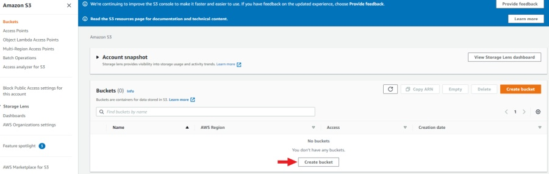
-
Specify the name and region of the bucket. You can also copy the settings of another bucket by clicking on the Choose bucket button.
-
Enable Block all public access. For access, you will use access key ID and secret access key.
-
Click Create bucket.
A new bucket will appear on the list of buckets.
Upload data
Note: manifest file is optional.
You need to upload data for annotation and the manifest.jsonl file.
-
Prepare data. For more information, see prepare the dataset.
-
Open the bucket and click Upload.
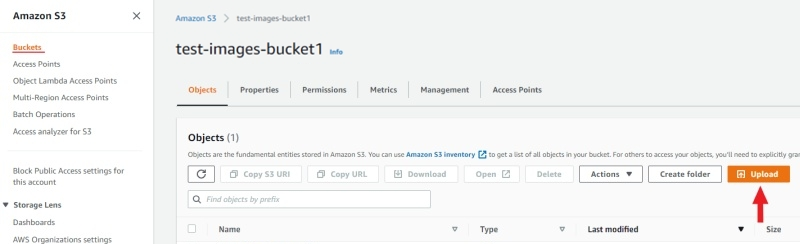
-
Drag the manifest file and image folder on the page and click Upload:

Access permissions
Authorized access
To add access permissions, do the following:
-
Go to IAM and click Add users.
-
Set User name and enable Access key - programmatic access.

-
Click Next: Permissions.
-
Click Create group, enter the group name.
-
Use search to find and select:
- For read-only access: AmazonS3ReadOnlyAccess.
- For full access: AmazonS3FullAccess.

-
(Optional) Add tags for the user and go to the next page.
-
Save Access key ID and Secret access key.

For more information, see Creating an IAM user in your AWS account
Anonymous access
On how to grant public access to the bucket, see Configuring block public access settings for your S3 buckets
Attach AWS S3 storage
To attach storage, do the following:
- Log into CVAT and in the separate tab open your bucket page.
- In the CVAT, on the top menu select Cloud storages > on the opened page click +.
Fill in the following fields:
| CVAT | AWS S3 |
|---|---|
| Display name | Preferred display name for your storage. |
| Description | (Optional) Add description of storage. |
| Provider | From drop-down list select AWS S3. |
| Bucket name | Name of the Bucket. |
| Authorization type | Depends on the bucket setup: |
| Region | (Optional) Choose a region from the list or add a new one. For more information, see Available locations. |
| Prefix | (Optional) Prefix is used to filter bucket content. By setting a default prefix, you ensure that only data from a specific folder in the cloud is used in CVAT. This will affect which files you see when creating a task with cloud data. |
| Manifests | (Optional) Click + Add manifest and enter the name of the manifest file with an extension. For example: manifest.jsonl. |
After filling in all the fields, click Submit.
AWS S3 manifest file
Note: manifest file is optional.
To prepare the manifest file, do the following:
- Go to AWS CLI and run script for prepare manifest file.
- Perform the installation, following the aws-shell manual,
You can configure credentials by runningaws configure.
You will need to enterAccess Key IDandSecret Access Keyas well as the region.
aws configure
Access Key ID: <your Access Key ID>
Secret Access Key: <your Secret Access Key>
- Copy the content of the bucket to a folder on your computer:
aws s3 cp <s3://bucket-name> <yourfolder> --recursive
- After copying the files, you can create a manifest file as described in preapair manifest file section:
python <cvat repository>/utils/dataset_manifest/create.py --output-dir <yourfolder> <yourfolder>
- When the manifest file is ready, upload it to aws s3 bucket:
- For read and write permissions when you created the user, run:
aws s3 cp <yourfolder>/manifest.jsonl <s3://bucket-name>
- For read-only permissions, use the download through the browser, click upload, drag the manifest file to the page and click upload.
Video tutorial: Add AWS S3 as Cloud Storage in CVAT
Google Cloud Storage
Create a bucket
To create bucket, do the following:
- Create Google account and log into it.
- On the Google Cloud page, click Start Free, then enter the required
data and accept the terms of service.
Note: Google requires to add payment, you will need a bank card to accomplish step 2.
- Create a Bucket with the following parameters:
- Name your bucket: Unique name.
- Choose where to store your data: Set up a location nearest to you.
- Choose a storage class for your data:
Set a default class>Standard. - Choose how to control access to objects:
Enforce public access prevention on this bucket>Uniform(default). - How to protect data:
None
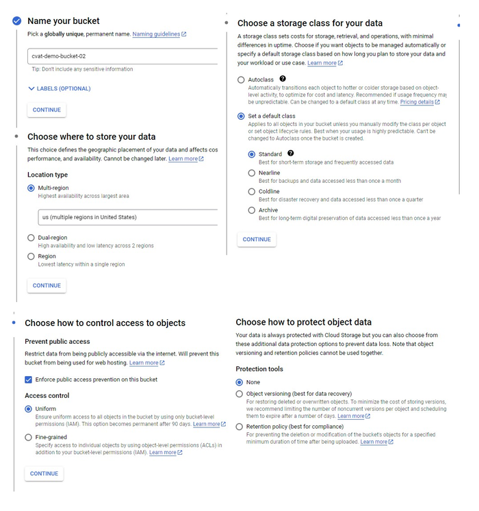
You will be forwarded to the bucket.
Upload data
Note: manifest file is optional.
You need to upload data for annotation and the manifest.jsonl file.
- Prepare data. For more information, see prepare the dataset.
- Open the bucket and from the top menu select Upload files or Upload folder (depends on how your files are organized).
Access permissions
To access Google Cloud Storage get a Project ID from cloud resource manager page

And follow instructions below based on the preferable type of access.
Authorized access
For authorized access you need to create a service account and key file.
To create a service account:
- On the Google Cloud platform, go to IAM & Admin > Service Accounts and click +Create Service Account.
- Enter your account name and click Create And Continue.
- Select a role, for example Basic > Viewer, and click Continue.
- (Optional) Give access rights to the service account.
- Click Done.

To create a key:
- Go to IAM & Admin > Service Accounts > click on account name > Keys.
- Click Add key and select Create new key > JSON
- Click Create. The key file will be downloaded automatically.

For more information about keys, see Learn more about creating keys.
Anonymous access
To configure anonymous access:
- Open the bucket and go to the Permissions tab.
- Сlick + Grant access to add new principals.
- In the New principals field specify
allUsers, select roles:Cloud Storage Legacy>Storage Legacy Bucket Reader. - Click Save.

Now you can attach the Google Cloud Storage bucket to CVAT.
Attach Google Cloud Storage
To attach storage, do the following:
- Log into CVAT and in the separate tab open your bucket page.
- In the CVAT, on the top menu select Cloud storages > on the opened page click +.
Fill in the following fields:
| CVAT | Google Cloud Storage |
|---|---|
| Display name | Preferred display name for your storage. |
| Description | (Optional) Add description of storage. |
| Provider | From drop-down list select Google Cloud Storage. |
| Bucket name | Name of the bucket. You can find it on the storage browser page. |
| Authorization type | Depends on the bucket setup: Advanced: For self-hosted solution, if the key file was not attached, then environment variable GOOGLE_APPLICATION_CREDENTIALS that was specified for an environment will be used. For more information, see Authenticate to Cloud services using client libraries. |
| Prefix | (Optional) Used to filter data from the bucket. By setting a default prefix, you ensure that only data from a specific folder in the cloud is used in CVAT. This will affect which files you see when creating a task with cloud data. |
| Project ID | Project ID. For more information, see projects page and cloud resource manager page. Note: Project name does not match the project ID. |
| Location | (Optional) Choose a region from the list or add a new one. For more information, see Available locations. |
| Manifests | (Optional) Click + Add manifest and enter the name of the manifest file with an extension. For example: manifest.jsonl. |
After filling in all the fields, click Submit.
Video tutorial: Add Google Cloud Storage as Cloud Storage in CVAT
Microsoft Azure Blob Storage
Create a bucket
To create bucket, do the following:
-
Create an Microsoft Azure account and log into it.
-
Go to Azure portal, hover over the resource , and in the pop-up window click Create.

-
Enter a name for the group and click Review + create, check the entered data and click Create.
-
Go to the resource groups page, navigate to the group that you created and click Create resources.
-
On the marketplace page, use search to find Storage account.

-
Click on Storage account and on the next page click Create.
-
On the Basics tab, fill in the following fields:
- Storage account name: to access container from CVAT.
- Select a region closest to you.
- Select Performance > Standart.
- Select Local-redundancy storage (LRS).
- Click next: Advanced>.

-
On the Advanced page, fill in the following fields:
- (Optional) Disable Allow enabling public access on containers to prohibit anonymous access to the container.
- Click Next > Networking.

-
On the Networking tab, fill in the following fields:
-
If you want to change public access, enable Public access from all networks.
-
Click Next>Data protection.
You do not need to change anything in other tabs until you need some specific setup.
-
-
Click Review and wait for the data to load.
-
Click Create. Deployment will start.
-
After deployment is over, click Go to resource.

Create a container
To create container, do the following:
- Go to the containers section and on the top menu click +Container
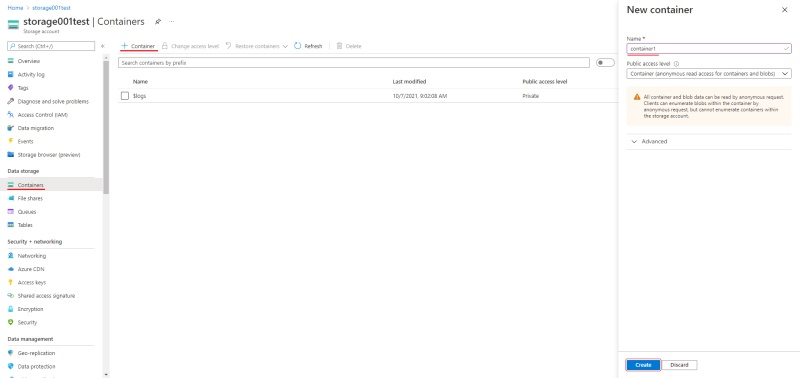
- Enter the name of the container.
- (Optional) In the Public access level drop-down, select type of the access.
Note: this field will inactive if you disabled Allow enabling public access on containers. - Click Create.
Upload data
You need to upload data for annotation and the manifest.jsonl file.
- Prepare data. For more information, see prepare the dataset.
- Go to container and click Upload.
- Click Browse for files and select images.
Note: If images are in folder, specify folder in the Advanced settings > Upload to folder.
- Click Upload.

SAS token and connection string
Use the SAS token or connection string to grant secure access to the container.
To configure the credentials:
- Go to Home > Resourse groups > You resource name > Your storage account.
- On the left menu, click Shared access signature.
- Change the following fields:
- Allowed services: Enable Blob . Disable all other fields.
- Allowed resource types: Enable Container and Object. Disable all other fields.
- Allowed permissions: Enable Read, Write, and List. Disable all other fields.
- Start and expiry date: Set up start and expiry dates.
- Allowed protocols: Select HTTPS and HTTP
- Leave all other fields with default parameters.
- Click Generate SAS and connection string and copy SAS token or Connection string.

Personal use
For personal use, you can use the Access Key from your storage account in the CVAT SAS Token field.
To get the Access Key:
- In the Azure Portal, go to the Security + networking > Access Keys
- Click Show and copy the key.

Attach Azure Blob Storage
To attach storage, do the following:
- Log into CVAT and in the separate tab open your bucket page.
- In the CVAT, on the top menu select Cloud storages > on the opened page click +.
Fill in the following fields:
| CVAT | Azure |
|---|---|
| Display name | Preferred display name for your storage. |
| Description | (Optional) Add description of storage. |
| Provider | From drop-down list select Azure Blob Container. |
| Container name` | Name of the cloud storage container. |
| Authorization type | Depends on the container setup. Account name and SAS token:
|
| Prefix | (Optional) Used to filter data from the bucket. By setting a default prefix, you ensure that only data from a specific folder in the cloud is used in CVAT. This will affect which files you see when creating a task with cloud data. |
| Manifests | (Optional) Click + Add manifest and enter the name of the manifest file with an extension. For example: manifest.jsonl. |
After filling in all the fields, click Submit.
Video tutorial: Add Microsoft Azure Blob Storage as Cloud Storage in CVAT
Prepare the dataset
For example, the dataset is The Oxford-IIIT Pet Dataset:
- Download the archive with images.
- Unpack the archive into the prepared folder.
- Create a manifest. For more information, see Dataset manifest:
python <cvat repository>/utils/dataset_manifest/create.py --output-dir <your_folder> <your_folder>